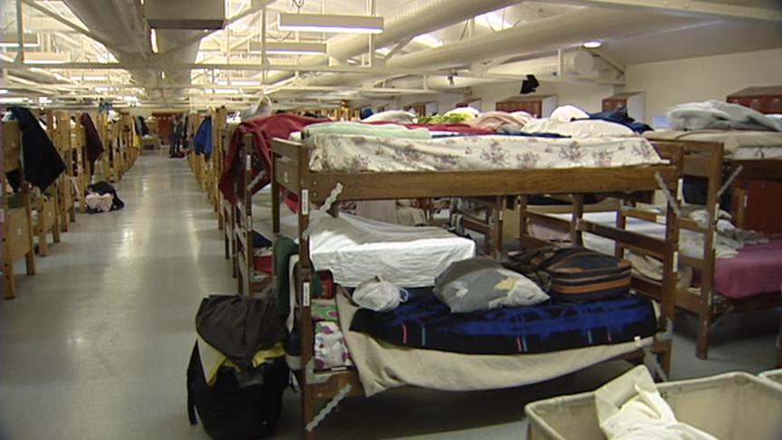

Homelessness in San Francisco
Our Mission
Our mission is to spread awareness about the upsurge of homelessness in the Bay Area, especially in San Francisco. We wanted to provide a resource for not only homeless people, but also people in need, so they can feel supported. Therefore, we made an easily accessible website that would help them find basic needs, such as shelter and food. RANCH stands for Resources, Aid, Nutrition, Clothing, and Housing.

San Francisco is the city with the highest homeless population in the Bay Area.
There has been a 17% jump in the homeless population in the last two years.

26,000 people in San Francisco have been taken off the streets through city programs between 2004 and 2018.
There are soup kitchens all around San Francisco that help feed the homeless.